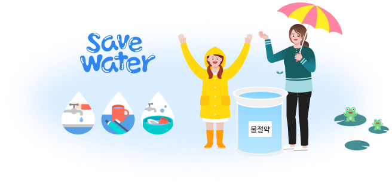
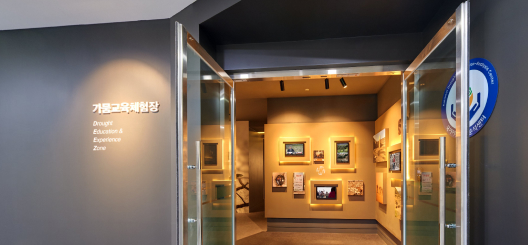

올바른 가뭄대응을 위해 가뭄도 교육이 필요합니다.
가뭄의 발생에서부터 예방, 대응까지의 전 과정 교육을 제공합니다.
가뭄교육의 필요성
최근 기후변화로 인해 우리나라의 가뭄 발생 및 피해가 증가하고 있습니다.
지금, 우리는 가뭄에 대비할 준비가 되어있나요?
가뭄도 교육이 필요합니다.
물절약?
도대체 어떻게 해야 할까요?
물절약!
가뭄에 대해 함께 알아봐요!

가뭄교육체험장 현황
교육 콘텐츠 소개
-
Ⅰ- Intro
교육 및 체험에 앞서 가뭄 피해 사진과 영상을 통해 가뭄의 심각성을 느낄 수 있습니다.
-
Ⅱ - 가뭄 이해
가뭄의 정의와 특징, 발생 사례와 향후 전망을 그래픽패널, 터치스크린 및 맵핑 영상을 통해 쉽게 이해할 수 있습니다.
-
Ⅲ - 가뭄 대응
과거와 현재의 가뭄대응 방법을 비교해가며 알아보고, 예방적 가뭄대응의 필요성을 느낄 수 있습니다.
-
Ⅳ - 가뭄 예정보
가뭄 예·경보의 필요성과 시행방안, 분석기법을 보고, PC를 통해 가뭄정보포털을 직접 체험할 수 있습니다.
-
Ⅴ - 물 절약
외국과 비교하여 우리나라의 물 사용량이 많음을 느끼고, 생활 속에서 물을 절약하는 방법을 알아봅니다.
-
Ⅵ - 가뭄체험
가뭄지역의 이야기를 통해 가뭄 상황을 이해하고, 가뭄이 발생할 때 사용하는 도구를 통해 가뭄을 직·간접적으로 체험합니다.
시설안내
본 시설은 일반인(학생, 교사), 공무원, 물(가뭄)관련 전문가, 외국인 등을 대상으로 가뭄의 이해, 가뭄대응, 물 절약 방법, 물 부족 지역의 가뭄체험 등 다양한 프로그램을 진행하고 있으며, 사전 예약제로 운영되고 있습니다.
한국수자원공사 (세종관 4F)
가뭄교육체험장 입구

국가가뭄정보분석센터 상황실